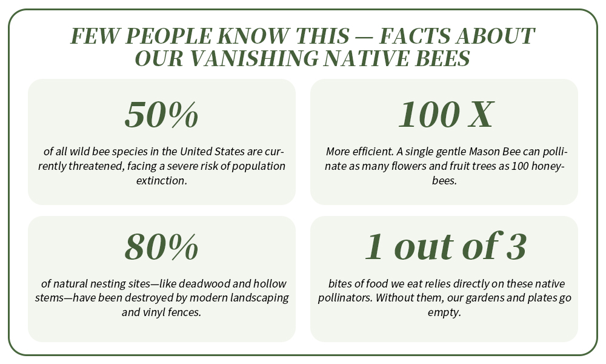
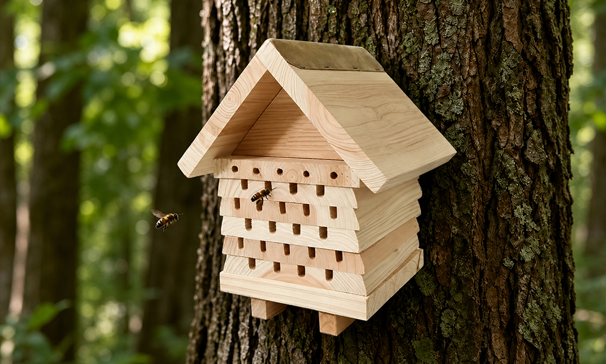
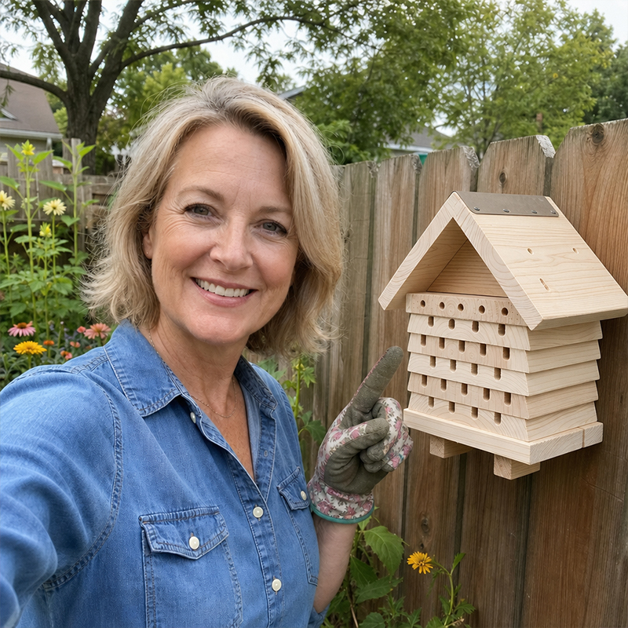
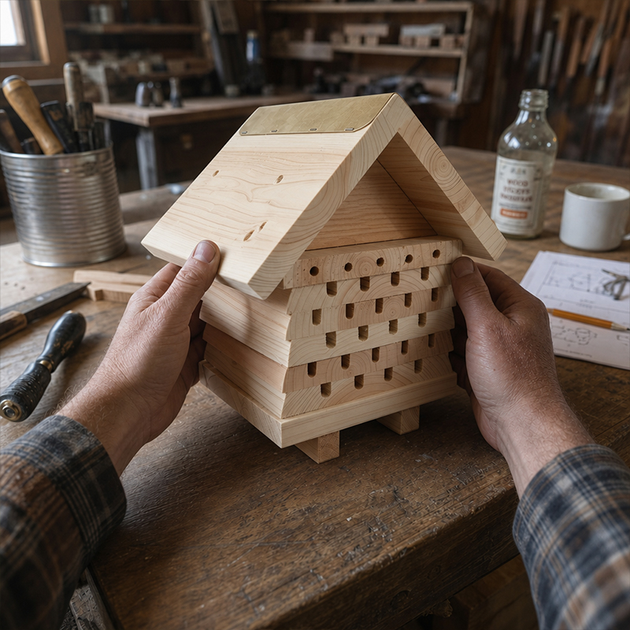
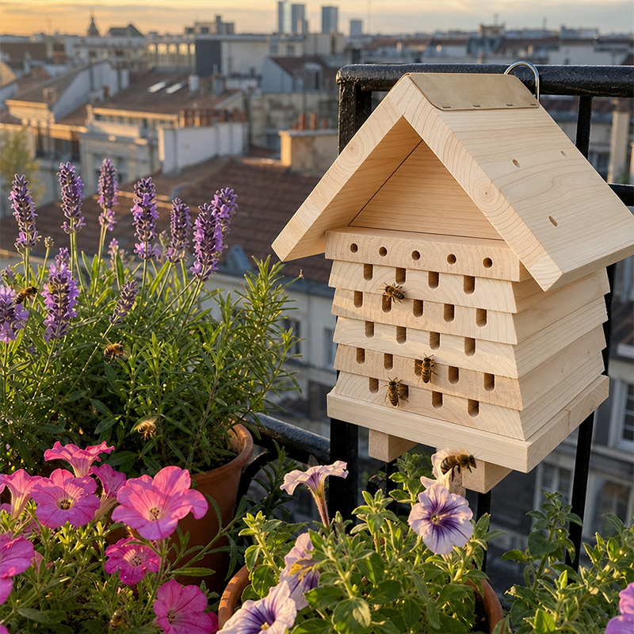

ADVERTORIAL
"Our Gardens Are Losing Their Buzz." Why a 72-Year-Old Oregon Craftsman Is Letting Go of His Final Handmade Bee Hotels Before Closing His Workshop Forever
Updated 2 days ago
At 72, Arthur Vance stands in his workshop in Oregon. After 50 years, he is about to bring his life's work to an end—yet what weighs on him most is not retirement… but the silent crisis happening right in our backyards.
The workshop is small—no more than five by seven meters. Along the walls hang saws, planes, and carving tools. In the corner stands an old wood-burning stove, radiating a dry, steady warmth that fills the room with the rich, comforting scent of fresh-cut cedar.
On the workbench stands a breathtaking, cabin-like structure that looks more like a piece of fine architecture than a garden accessory: a beautifully layered solid cedar bee hotel, capped with a gleaming, hand-fitted copper roof.
Arthur gently runs his hand across the smooth, untreated wood.
"You know what matters most to me?" he asks without looking up. "Not the workshop. Not retiring."
He pauses, looking out the window at his garden. "It's that it's getting quieter outside. Every year, our gardens lose their buzz. And most people don't even realize why."
He is talking about the rapid decline of native, solitary pollinators. And the biological data confirms exactly what he has been witnessing for decades.
Most Homeowners Don't Realize It—But Our Best Gardeners Are Vanishing
Over the past few decades, populations of native solitary bees—like Mason bees and Mining bees—have dropped dramatically. Unlike honeybees, these gentle, non-stinging creatures don't live in hives. They nest alone in tiny wooden tunnels.
They also happen to be the world's best pollinators. A single Mason bee can pollinate as many flowers as 100 honeybees.
Yet, modern landscaping is destroying their homes. Old trees with natural hollows are being cut down, and pristine, chemical-treated vinyl fences are replacing natural hedges.
"Twenty years ago, my garden beds were alive with gentle solitary bees by April," Arthur says. "Now? People look at their flower beds and wonder why their fruit trees aren't yielding and why their flowers look tired. It’s because the pollinators have nowhere to live."
But what frustrates him most is this: Eighty percent of the mass-produced "insect hotels" sold today are complete death traps.

The Toxic Truth Behind Mass-Produced Bee Houses
When asked about the cheap insect houses sold in big-box DIY stores, Arthur shakes his head in frustration.
"People mean well when they buy them. But what they are putting in their gardens is cheap decoration—not a safe home."
He listed the fatal flaws based on his 50 years of woodworking experience:
❌
Toxic Chemicals & Varnishes:
Many cheap imports are sprayed with chemical glues, paints, or varnishes to look pretty on a shelf. Solitary bees have an incredibly sensitive sense of smell. They will completely avoid a house that smells like chemicals.
❌
Uniform, Rough Tunnels:
Mass-produced houses use cheap bamboo tubes or plastic slots that are all the exact same size, often with splintered edges that tear the bees' fragile wings.
❌
Paper-Thin Walls & Leaky Roofs:
Houses with thin, 10mm plywood walls turn into ovens in the summer and deep-freezes in the winter, destroying the larvae inside.
Heavy, Multi-Layered Protection: The Story Behind the Design

"For years, I watched people buy those flimsy, thin-walled wooden boxes to hang on their trees," Arthur explains. "And for years, I watched those boxes fail. Real nature isn't uniform. A proper sanctuary needs depth, weight, and multi-layered protection."
That is why Arthur spent his final years bringing a lifetime of lessons together to develop his ultimate masterpiece: SheremArt Wildhaven Bee Hotel .
Instead of hollow mass-produced boxes, this sanctuary features a substantial, multi-layered chalet design .
Arthur precisely mills each individual layer of solid, untreated cedar, stacking and interlocking them one by one. This creates thick, heavily insulated walls that protect the larvae from extreme weather.
Why the
SheremArt Wildhaven Bee Hotel
Design Changes Everything
🐝
Multi-Layered Chalet:
Precision-stacked cedar creates thick, insulated walls that block harsh wind and regulate temperature for vulnerable larvae.
🐝
Mixed-Diameter Tunnels:
Custom-milled with varying hole sizes across every layer to naturally attract diverse native bee species.
🐝
100% Untreated Cedar:
Naturally weather-resistant and rot-proof. Completely free of toxic glues, paints, or chemical varnishes.
🐝
Aging Copper Roof:
Heavy copper cap deflects 100% of rain, maturing over time into a beautiful, rustic vintage patina.
🐝
3 Ways to Display:
Ultimate versatility—set it on a flat patio slab, mount it to a wall, or hang it via the built-in steel hook.
Nature Approved: Over Two Decades of Success

Arthur opens a worn, leather-bound notebook on his bench.
"The early prototype for this design," he says, pointing to a sketch, "I built for a neighbor back in 2004. It has survived over twenty tough winters without a single drop of chemical stain. Why? Because solid cedar is nature’s armor."
He smiles, looking back at his workbench. "I’ve since perfected the tunnel sizes and added the copper roof, but that original foundation is still out there. Every spring, without fail, the wild bees return to it. Year after year."
This isn't by chance. It is the result of breathable, premium wood, flawless weatherproofing, and a deep understanding of solitary bee behavior.
Best of all? They are completely safe around kids and pets.
"People hear 'bees' and they get nervous," Arthur chuckles. "But solitary bees have no colony or queen to defend. They are incredibly gentle. They virtually never sting. You can sit right next to this chalet on your patio and watch them work in peace."
The End of an Era—And Your Last Chance
Arthur will permanently close his workshop door this season.
"My hands just can't do it anymore," he says, stretching his weathered fingers. Severe arthritis in his joints has made the hyper-precise, millimeter-perfect milling required for the variable-diameter bee tunnels too painful to sustain.
"I have no successor," he adds with a touch of melanchol y. "My kids went into tech; nobody wants to spend days in a dusty workshop making artisan bee hotels anymore. These ones sitting on my shelves right now are the very last ones I will ever make."
"For Me, This Is No Longer About Profit—It's About the Legacy"
To ensure that his final batch of SheremArt Wildhaven Bee Hotel s finds a home in American gardens before the upcoming season, Arthur decided to take an unprecedented step: he is offering them directly online at a massive markdown.
"I don't want them sitting in a warehouse. I want them standing in garden beds and hanging on walls, bringing life back to backyards across the country."
His granddaughter, Chloe, helped him bring his life's work online.
"At my age, I don't know anything about the internet," Arthur smiles. "But Chloe told me that homeowners everywhere are looking for real, sustainable ways to help the environment. This is my contribution."
Why Everyone Loves the SheremArt Wildhaven Bee Hotel



A Sanctuary for Them. A Masterpiece for Your Garden.
"Do you know the best part?" Arthur says, his eyes lighting up. "When a customer sends me a photo of a gentle little bee peeking out from one of my cedar tunnels... that’s when I know my work keeps living on, even after the workshop goes dark."
The SheremArt Wildhaven Bee Hotel is available exclusively on this page.
Because this is Arthur’s final retirement batch, each piece is individually hand-milled, and inventory is strictly limited. Once the remaining stock is gone, this design will be retired forever.
Today, you can secure yours at the special 50% OFF retirement price of $49.99 (Regularly $99.99).
30-Day "See Who Visits" Guarantee
Mount the chalet in your garden and watch the magic happen. If you aren't completely stunned by the solid cedar craftsmanship, or if the wild bees don't start moving into their new home, simply return it within 30 days for a full, hassle-free refund.
Frequently Asked Questions
Is this the authentic Arthur Vance design?
Yes. Genuine
SheremArt Wildhaven Bee Hotel
s are sold only here. We ship directly from the workshop to your door—no middleman, no cheap mass-produced lookalikes.
What if it gets damaged in the winter?
You don't need to worry. This is 100% untreated premium cedar and heavy copper. It is built to weather decades of rain and snow naturally, without rotting or growing toxic mold.
Only 29 sets left – get yours now!